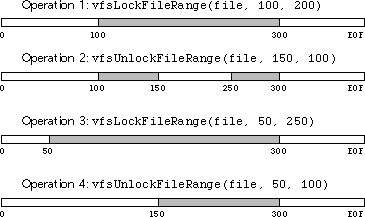

File System Manager
The File System Manager is a portable hierarchical file system interface based on a set of device-independent structures. The File System Manager provides services for buffered and raw file I/O, path management, directory management, setting and getting access privileges, and obtaining information about the file system. The File System Manager is designed to address all of the I/O requirements of a typical application. It is not intended, however, as the foundation for complex database engines or for pure transaction processing. The File System Manager provides an API interface that is similar to the I/O primitives provided by most operating systems. If you are familiar with the file system functionality of one or more operating systems, the File System Manager should be simple to understand and use.
Path Notation
The File System Manager documentation uses the UNIX convention for path notation to describe pathnames consisting of directories and files. The path notation for the root volume is a slash "/" character, as is the character used to separate path components. For example, "/dir/dir1/filename" describes a path with "filename" contained in the directory "dir1," which is contained in the directory "dir" which is contained in the root directory "/". (DOS/Windows uses a similar notation except it replaces the slash with a backslash "" character.) Full pathnames always begin with a slash to indicate that they start from the root volume. A relative path is any path that does not begin with a slash character. The parent directory of a file or directory is indicated with the symbol "..", so
"../filename" would describe a path to the file "filename" contained in the parent directory. The current directory containing a file or directory is denoted by the symbol ".", so "./filename" would describe a path to the file "filename" contained in the current directory. (This is, of course, equivalent to simply using "filename" as the path.)
Glossary
The following is a list of terms important to understanding this document:
- Path A path describes the hierarchical route to a file or directory
residing anywhere in the global file system name space.
Paths are identified by type, which can be either a full path
(starting at the root directory), a relative path (relative to
another directory), or simply a name. Under DOS/
Windows and the Macintosh, a path may include
information concerning the volume upon which it resides.
Full Path A full path describes the hierarchical route to a file or directory starting from the root of the file system hierarchy. Under UNIX the root directory is represented by a leading "/" character, under DOS/Windows it is denoted by "". A full path in this reference guide always starts with the "/" character (for example, "/dir/filename" is a full path, "dir/filename" is not.)
Relative Path A relative path describes the hierarchical route to a file or directory that explicitly starts from another directory. To correctly access a relative path, the File System Manager must know the starting directory from which to resolve the relative path to its proper location. Relative paths may be valid from any number of starting directories, for example "dir/filename" is valid from any directory that contains the directory "dir" with a file "filename" in it.
Canonical Path A canonical path is a full or relative path that does not contain references to current or parent directories that can be resolved by the information contained within the path. For instance, the path "/bin/.." is not canonical because it contains the relative reference to the parent directory ".." and the actual parent directory "bin." The canonical version of this path is "/". A full pathname can always be fully canonicalized because all parent and current directory references can be resolved. (Note that the root of the directory hierarchy always has itself as a parent directory so even "/../../../../.." refers to "/".) A relative path can also be canonicalized to the point where only parent directory references that cannot be resolved will remain. For instance, the canonical form of the relative path "../dir/.." is "..". Use MakePathCanonical to canonicalize paths.
Path Leaf A path leaf refers to the last member of a path that forms the ultimate target for File System Manager I/O functions that take path arguments. For example, for the path "/ dir/dir1/dir2/filename," the path leaf is "filename." Use SetPathLeaf to change the path leaf for a given path.
File A file is defined by the File System Manager as any file system object referenced by name that is not a directory or folder. Under some operating systems (for example, UNIX) files can represent more than bytes on a disk. They can be communications portals (sockets, named pipes, and so on), or device driver references used to perform I/O directly with devices and system resources. These types of files are recognized as "special" by the File System Manager; however, you can open and manipulate these files as you do any other.
Directory A directory is a file system object that serves as a container for other directories and files. A directory is also referred to as a folder.
Folder Same as a directory.
Directory File A special file used by operating systems to physically store directory contents. A directory file contains the names of files and directories held in the directory and is almost always a read-only object. As a general rule, only the operating system itself is ever able to write into directory files.
Directory Entry A record within a directory file that contains the name (and sometimes other information used by the operating system) of a file or directory that is within the directory.
Working Directory The directory in which the current program or process resides. When a Galaxy program is running, it will always have a working directory associated with it. Working directories are important for file system operations and I/O operations that use relative pathnames or just file/directory names since a relative path or name will be relative to the working directory. For example, if a Galaxy program's working directory is "/user/files," creating the file with the path "file.tst" will place the file in the "/user/ files" directory. (Use CreateFile to create a file.) The working directory for a Galaxy application can be changed using the SetWorkingDir function or the PushDir and PopDir functions. Until it is explicitly changed, the application's working directory will be the same as the directory from which it was invoked.
Current Directory For a running Galaxy program, the same as Working Directory. In pathnames, the current directory is referenced by the symbol ".".
Parent Directory Refers to the directory containing the referenced file or directory¯for example, "bin" is the parent directory of "/ bin/demo." In pathnames the parent directory is referenced by the symbol "..". (Note that the root of the directory hierarchy always has itself as a parent directory so even "/../../../../.." refers to "/".)
Symbolic Link A file system object that serves as a pointer to another file or directory. Since it is not a "hard" link (a physical reference to a file or directory), a symbolic link can reference files and directories that reside on other volumes including network volumes. Generally, symbolic links are special files that contain the path of the file to which they are linked. On operating systems that do not support symbolic links, calls to File System Manager functions that create and manipulate symbolic links generate the exception vexModuleUnimplementedException.
Alias Same as a symbolic link.
Invalid Link A link that points to an object that does not exist or is not accessible. For example, when the object pointed to by a symbolic link is removed, the symbolic link is not removed and will now reference a nonexistent object. It is also possible for a symbolic link to be invalid when the file or directory to which it points resides on an unmounted volume or file system. (For example, a symbolic link could point to a file or directory on a floppy disk that has been temporarily ejected.)
Buffered I/O Read and write operations that are initially placed in
input/output memory buffers by the File System Manager
before actually being read from or written to the target file.
Using buffered I/O allows the File System Manager to
optimize access to physical devices. For example, if your
application is writing small objects to a disk file using
several write operations, it is very inefficient to perform a
physical write to the disk (especially a floppy) for every
object. The operating system has a minimum physical disk
block size¯generally in the 512 to 1024 byte range¯that
it writes out every time a physical write is attempted. In
the above case, the File System Manager collects the results
of several successive write operations and only flushes
them to disk when the buffer is full. The buffer size
corresponds to the operating system's optimal I/O buffer
size as defined by vfsIO_BUFFER_SIZE.
You may use raw file I/O to bypass the File System
Manager's buffered I/O if you need to directly access
physical devices. In most cases this is not necessary,
because you can flush the buffered contents of any file
controlled by the File System Manager with the
FlushFileBuffer function.
Raw I/O Read and write operations that are immediately written to the target device. Raw I/O is efficient when reading and writing in the operating system's optimal buffer size as defined by vfsIO_BUFFER_SIZE. Otherwise, it is much better to use the File System Manager's default buffered I/ O. Note that even raw I/O does not guarantee real-time access to the target device on many operating systems. Sophisticated multi-process environments like UNIX maintain a buffer cache of disk blocks for performance reasons that are the initial targets of read and write operations. The operating system decides when to flush these buffers. Other operating systems allow "RAM disks" that serve as high-speed buffers between the Galaxy application and the ultimate target device.
Advisory Lock A lock placed on a file or any portion of a file that has no effect on any other program's ability to update it but can be detected by other programs. Advisory file locks are used by cooperating processes to maintain file consistency. Before a process writes to a section of a file, it tests to see if it is locked; if it is, it generally waits a short period of time and tries again. Cooperative use of advisory file locking allows multiple programs to simultaneously access a single file.
Volume A volume generally refers to a secondary storage device like a hard disk, floppy, or CD-ROM drive. It can also address a network connection that represents a remote file system on another machine. Under UNIX, volumes are not generally used by the File System Manager, because separate physical devices and disk partitions are usually connected to present a single contiguous file system hierarchy.
File System Same as a volume. (Under UNIX, a file system is usually associated with a volume that represents a physical disk or portion of a disk, or a remotely mounted network volume.)
File Channel Sometimes referred to as a file descriptor or a file handle, a file channel is the internal reference used by the operating system to access to an open file. All operating systems limit the number of file channels available to Galaxy client programs, therefore limiting the number of simultaneously open files. The File System Manager's file caching mechanism is designed to overcome this problem. There are also several functions provided to allow client programs with special I/O needs to manage file channels directly (for example, ReserveFileChannels, SurrenderFileChannels.)
General Purpose Constants
The File System Manager defines a number of constants that are used by various functions for special purposes. (For example, the function Access uses several constants to determine which access privileges to test.) Special purpose constants are defined in the documentation for each of the functions that use them. The following are globally defined constants that are used by the File System Manager:
- vfsMAXIMUM_NAME_LEN Indicates the maximum number of bytes in a file name
that the operating system will allow. UNIX supports
maximum file name lengths from 14 characters (System V
3.x) to 255 characters (BSD, SunOS, System V 4.x). DOS/
Windows currently supports a special file naming
convention that allows file names of up to eight characters
with an optional extension of three bytes (referred to as
the "8.3" convention). The File System Manager allows up
to eleven bytes for a DOS/Windows file name if it does not
include a period extension separator. The first eight bytes
are used for the file name and any remaining bytes are
automatically used as the extension. If a period extension
separator is included in the file name under DOS/
Windows, the File System Manager enforces the standard
8.3 convention. If possible, you should choose file names
that conform to the lowest common denominator 8.3
DOS/Windows convention. UNIX and MacOS support any
DOS file name as a natural subset of their file system
capabilities.
vfsMAXIMUM_PATH_LEN Indicates the maximum number of bytes in a pathname (including path separators) that the operating system will allow.
vfsIO_BUFFER_SIZE Indicates the operating system's optimal buffer size for I/O. Usually corresponds to the operating system's default disk block size or the size of individual buffers in the buffer cache.
vfsNO_VOLUME_REFERENCE Indicates that a particular volume has no volume reference ID. (Used when getting or setting a volume reference ID number for a particular file system or volume.)
vfsSURRENDER_ALL_CHANNELS Used by SurrenderFileChannels as an argument to indicate that all file channels currently reserved by the Galaxy client program for special use are now free to be used by the File System Manager.
vfsNO_FILE Defines a NULL value for vfsFile pointers. Provided for convenience.
How the File System Manager Works
The File System Manager provides an abstraction layer above the basic file system primitives of the native operating system. As with other Galaxy managers, the File System Manager is meant to be completely functional and does not represent the lowest common denominator of the underlying services it replaces. In some cases, such as file locking or multi-user access privileges, abstractions are only available on operating systems that support them.The File System Manager manages file system resources in conjunction with the underlying operating system's physical limits. In one very important case¯the limit on the number of simultaneously open files¯it provides an internal caching mechanism to allow the Galaxy developer to open a virtually unlimited number of files. This mechanism transparently closes files and caches the information needed to reopen them in their previous state when too many files are opened. When an I/O operation is requested for a file in the cache, it is reopened transparently and the requested I/O is performed. In reality, most applications will never open enough files for the caching mechanism to come into play.
Key Functionality
When you are using the File System Manager, you must first initialize it via a call to vprefSetArgs. This automatically calls Initialize and sets up the File System Manager environment. You must make sure this is done before you open any files or change the application's working directory.
In general, blindly mixing File System Manager calls with native system calls that manipulate the file system is a bad idea. The File System Manager maintains state information about the files and volumes it is managing that can be invalidated by using native operating system facilities. Defined entry points within the File System Manager provide you with explicit access to C library I/O functions and OS system calls if you need to access them.
The File System Manager supports advisory file locking on operating systems that support it. Advisory locks have no effect on file I/O, so you are always able to read and write to sections of a file that have been locked by other threads/processes. Advisory locks require cooperation among threads/processes competing for the file. Each thread or process must test a file or file section for locks before writing to it. The following code fragment is an example:
Example 73. Testing a file for locks
On systems that support overlapping locked regions in a file, locks created by the same process can be overlapped to produce a single contiguous lock region. Locking two contiguous regions will have the same effect. Likewise, unlocking portions of an existing lock region will "fragment" it and create multiple locks. Note that you cannot create overlapping locks or unlock regions locked by another process.
Figure 35 graphically illustrates what will happen to a 400 byte file through a sequence of four file locking/unlocking operations carried out by a single process. The locked regions are shaded.
Figure 35. File locking/unlocking sequence

When testing for the presence of locks using IsFileLocked or IsFileRangeLocked, if any portion of the section to be tested is locked, these functions return TRUE. The File System Manager constant vfsLOCK_TO_END is supported by LockFileRange, UnlockFileRange, and IsFileRangeLocked to indicate lock/unlock/test to the end of the file. Files locked using vfsLOCK_TO_END always lock to the end of the file's contents even if new data is appended to the file.
vfsOPEN_DENY_WRITE Open a file disallowing write access by others.
vfsOPEN_DENY_READ_WRITE Allow neither read nor write by others.
The file_system example illustrates how to use the File System Manager. It is by no means intended to provide an exhaustive view of the API; however, it should give you a good idea of how to make your Galaxy application interact with the file system in a portable manner.
vfsFile *file;
vbyte *buf;
if (vfsIsFileRangeLocked(file, vfsGetFilePos(file),
vfsIO_BUFFER_SIZE)) {
/*
* Possibly display an error message,
* wait and try again, etc.
*/
} else
vfsWriteFile(buf, sizeof(vbyte), vfsIO_BUFFER_SIZE, file);
You may lock more than one section of a file at any given time. However, the operating system will generally have an absolute limit on the number of locks that can be placed on a single file.NOTE: File System Manager file locking supports the Network Lock Manager and
allows file locking for remote Network File System (NFS) files. In practice,
many operating systems do a poor job implementing the NFS lock daemon
and can "hang" a Galaxy client program that attempts to lock files across
NFS. Be careful to test the implementation of the platforms you wish to
target.
For operating systems that have special file sharing modes or "deny bits," the Galaxy default is to allow sharing for both reading and writing. This was done to ensure backward compatibility with earlier versions of Galaxy, among other things. To turn off one or the other or both, OR in the following flags to the accessType parameter of OpenFile.vfsOPEN_DENY_READ Open a file disallowing read access by others.
For example, to open a file for reading and writing by the person opening the file, but allow others to open the file for reading only while the first person has the file open, use the following call. vfsOpenFile(existingFile,
vfsOPEN_READ_WRITE | vfsOPEN_DENY_WRITE);
As a final note, when using the File System Manager, you must interact with the Galaxy String Manager to import file, directory, and volume names. Several examples included in this document illustrate how to do this with various File System Manager functions. As with the rest of Galaxy, you should not assume you are dealing with a single character set or your application will be less portable and more difficult to internationalize. Sample Code
Complete source code demonstrating some of the concepts presented in this chapter is available in your Galaxy distribution in the samples/docsamps directory.
Table of Contents
Help Map
Need help? Contact Visix.